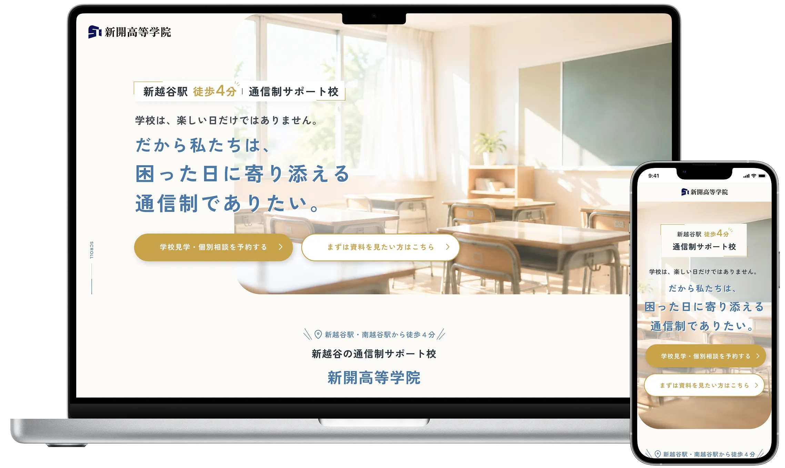
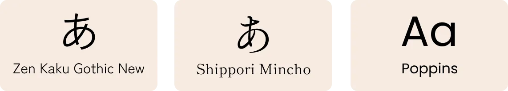
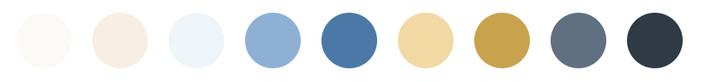

新開高等学院様
教育サービスの集客LP
Education service landing page

概要
通信制サポート校「新開高等学院」の、個別相談・学校見学への申し込みを目的としたランディングページを制作しました。
「学校の本当の価値は、困った日に表れます。」というメッセージを軸に、子どもの不登校や学校生活に不安を抱える保護者を主なターゲットとして設計しています。
不安を煽るのではなく、「ここなら相談できそう」「この学校なら寄り添ってくれそう」と感じてもらえるよう、教育機関としての信頼感と温かさを両立したデザインを目指しました。
デザインからコーディング、WordPressへの組み込みまで一貫して担当しました。
工夫したポイント
ターゲットに寄り添った情報設計
学校生活に不安を抱える生徒・保護者を想定し、不安を必要以上に煽るのではなく、共感から学校の考え方やサポート内容へと自然につながる構成を意識しました。
「ここなら子どものことを相談できそう」と感じてもらえるよう、ユーザーの心理に沿って情報の順序を整理しています。
制作を通して
今回の制作を通して、LPでは情報を分かりやすく伝えるだけでなく、ユーザーがどのような気持ちでページを訪れるのかを考えることの大切さを改めて感じました。
特に教育サービスでは、強い訴求で行動を促すのではなく、学校の考え方やサポート内容を一つずつ丁寧に伝えることが大切だと感じました。不安を抱えてページを訪れるユーザーに対して、どのような情報や見せ方であれば安心して読み進めてもらえるのかを考えることも、LPを設計するうえで重要だと学びました。
デザインやCTAだけを個別に考えるのではなく、ページ全体を通して「どのような順序で、何を感じてもらうか」を意識して設計することの重要性を実感した制作となりました。
デザインシステム
Typography

Color palette
